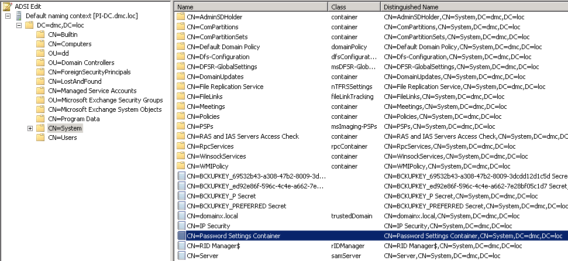
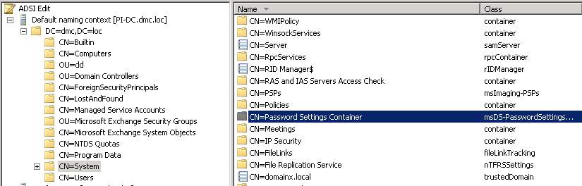

Password Expiration email report (being delivered automatically) and Ad-hoc report
(generated manually) provide a different number of user accounts in the following operating
environment:
This could happen because the Data Processing Account that is being used to collect data does not have enough permissions to read the Password Settings Container from the target domain. While the Ad-Hoc is being run under a different account which can read the Password Settings Container
To check if the Data Processing Account has enough permissions please perform the following steps:
- Netwrix Auditor is configured to monitor password expirations in a domain which belongs to the forest with one-way trusts established.
- The password policy in the target domain is set granularly by using the Fine Grained Password Policy (FGP)
- Netwrix Auditor is set to report on users with Fine Grained Policy Settings (the "Only report on users with Fine Grained Policy Settings" checkbox is checked )
This could happen because the Data Processing Account that is being used to collect data does not have enough permissions to read the Password Settings Container from the target domain. While the Ad-Hoc is being run under a different account which can read the Password Settings Container
To check if the Data Processing Account has enough permissions please perform the following steps:
- Run ADSI Edit as the Data Processing Account (refer to the KB if you need to install ADSI Edit utility)
- Connect to the target domain Default Naming Context
- Navigate to the CN=System
- Try to open CN=Password Settings Container and read the PSO.

To provide read permissions to the Data Processing Account:
- Run ADSI Edit as a domain Administrator
- Connect to the target domain Default Naming Context
- Navigate to the CN=System
- Right-click CN=Password Settings Container, select Properties, go to the Security tab and add the Data Processing Account and specify Read permissions.
